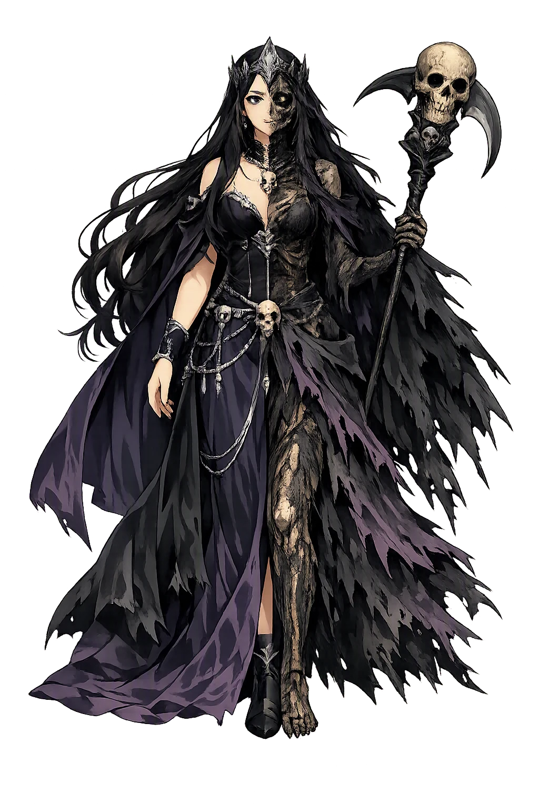
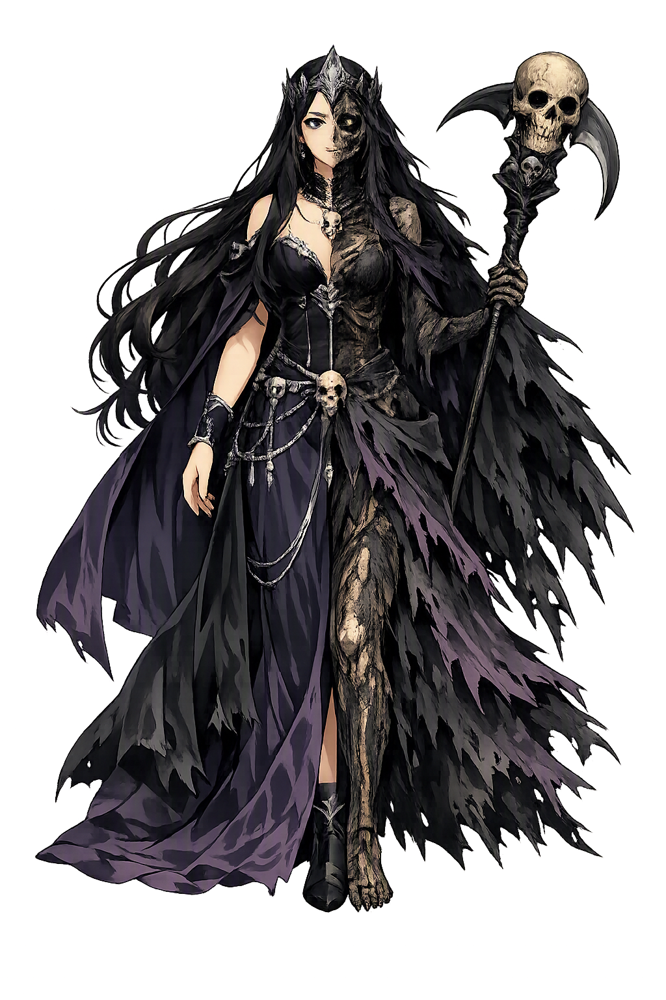

The Authentic Orthography
Death, Underworld, Souls · Hidden one (from *heljan)

Unicode restoration and ASCII comparison
ᚼᛁᛚ
The name in its original Norse form. Hel (ᚼᛁᛚ) is attested in the source tradition — “Hidden one (from *heljan)”. Its original diacritics and script distinctions carry the full phonetic and orthographic weight of the source tradition.
hel
The plain hel form is identical to the Unicode restoration. Because this name is already written in Latin letters, no diacritics, stress, or script information were lost — only capitalization differs.
Hel
The Unicode restoration does not need to recover lost marks for Hel. Its value is canonical spelling and consistent cataloguing, not the reconstruction of erased orthography. The domain is readable as-is to both DNS and humanity.
Hel.com → hel.com
The non-ASCII characters in Hel are encoded while the ASCII remains visible. To the DNS, it is Punycode. To humanity, it is Hel.
How Hel travels from ancient script to the modern URL
Owned, ideal, and ASCII forms of Hel
Hel
Restores ᚼᛁᛚ. The full Unicode restoration. hel.com is not in the PuniCodex collection — it is watched for release; if it drops, this temple upgrades to an owned flagship.
How Hel was spoken
The Hidden One Who Keeps the Unheroic Dead
Hel is the daughter of Loki and Angrboða whom Óðinn cast down into Niflheimr and set over the dead: half blue-black and half the colour of living flesh, she rules Éljúðnir, where those who die of sickness and old age — the vast, unburned majority of humankind — are sent to her keeping.
Her hall, 'Sprayed with Snowstorms', behind high walls and great gates — the dwelling Snorri names as the terminus of every quiet death.
Her dish is Hunger, her knife Famine: the furniture of her table names the slow wasting she presides over.
'Plunging to Destruction' — the threshold of her bedchamber, one of the named fittings of the hall in Gylfaginning's grim inventory.
Half blue-black, half the colour of flesh — 'easily recognized', Snorri says, downcast and fierce: the visible seam between the quick and the dead.
Stories of Hel
Hel acts rarely and presides always. The corpus gives her one origin, one judgment, and a standing geography — and in exchange she receives nearly everyone. The myths agree that the gods could not kill her; they could only give her what they most wanted hidden, and make her keeper of it forever.
Loki got three children on the giantess Angrboða in Jötunheimr: the wolf Fenrir, the serpent Jǫrmungandr, and Hel. When the gods learned that this brood was being raised, and read in the prophecies that great harm would come of them, Óðinn sent for the children and disposed of each: the serpent he threw into the deep sea that circles all lands, the wolf the Æsir kept to bind, and Hel he cast down into Niflheimr. There he gave her authority over nine worlds, that she should apportion all dwellings among those sent to her — and those are the sickness-dead and the age-dead.
Snorri then gives the strangest inventory in the Edda. Her hall is called Éljúðnir; her dish Hungr, Hunger; her knife Sultr, Famine; her serving-man Ganglati and her serving-maid Ganglǫt, the slow-walking pair; the threshold she steps over is Fallanda Forað, Plunging to Destruction; her bed is Kǫr, the sick-bed, and its hangings Blíkjanda Bǫl, Gleaming Bale. And of Hel herself: she is half blue-black and half the colour of living flesh, and therefore easily recognized — rather downcast and fierce of countenance. The goddess of death is furnished out of the slow deaths she rules: her household is a ward, and she is its matron with a corpse's half-face.
When Baldr lay dead and Hermóðr the Bold had ridden nine nights down the dark road, he came to Helgrindr, the barred gate, spurred Sleipnir, and leapt it unopened. In the hall he found Baldr seated in the high seat — the most honoured of the dead already given Hel's highest place — and he stayed the night. In the morning he asked Hel to let Baldr ride home with him, and told her how great the weeping was among the Æsir.
Hel's answer is her only speech in the corpus, and the whole ending of the world turns on it: she would test whether Baldr was as beloved as was said. If all things in the world, living and lifeless, weep for him, he shall go back to the Æsir — but he shall stay with Hel if anything speaks against it or refuses to weep. Everything wept: men and beasts, earth and stones, trees and metals. Only the giantess Þökk in her cave wept dry tears: 'Let Hel hold what she has.' The sentence is usually read as Loki's cruelty. It is also, word for word, Hel's own charter: she holds what she has. No one has ever gotten it back from her by force.
The Poetic Edda keeps her realm on the map rather than on the stage. When Óðinn, disguised, wagers his head against the giant Vafþrúðnir's wisdom, his proof that he has travelled farther than any god is this: 'Nine worlds I came through, down below Niflhel; thither men die out of Hel.' The line folds the dead downward through layers — there is a Hel, and there is something below Hel, a death beneath death for those already dead.
Grímnismál plants the same region in the world-tree's architecture: three roots hold Yggdrasill, and Hel dwells beneath one of them, while men dwell beneath another and the frost-giants beneath the third. The dead are not elsewhere; they are under the same tree, at another root. The hidden one is hidden in the most literal way the Norse cosmos allows — covered by the world's own structure.
Before Baldr ever falls, Óðinn saddles Sleipnir and rides down the same road his son Hermóðr will ride after, to the grave of a völva east of Hel's gate. He raises her with spells and demands to know for whom the realm below is dressed. She answers unwilling: the benches are strewn with arm-rings, the dais fairly decked, the mead brewed, the shields overspread — for Baldr. The hope of the gods departs.
The poem's glimpse inside the hall is the other side of Gylfaginning's inventory of hunger and slow walking: Hel's house is also a hall of honour, strewn and shining like Valhǫll for the guest it expects. The deadliest hospitality in the Edda is prepared in advance, and it is beautiful. Baldr will sit in that high seat within the year.
Hel is what the gods do with what they cannot destroy. Óðinn cannot kill Loki's daughter — the prophecies forbid the thought — so he hides her, and the hiding is so thorough that it becomes an office: the concealed one becomes the keeper of everyone else the world conceals. Her name says it plainly: the hidden one, from the verb for covering over. Every grave is a small act of heljan. And her charter is more honest than Valhǫll's: Óðinn's hall takes the spectacular few, the spear-marked and the chosen; Hel takes the rest — the sick, the old, the children, the farmers in their beds — which is to say she receives, in the end, almost the whole of humankind, and keeps it behind a gate no god has ever forced. 'Let Hel hold what she has' was meant as a curse. It is also simply the truth of things, and the Edda knew it: everything that dies quietly is already hers, and she has never once given it back.
Enter Extended Lore